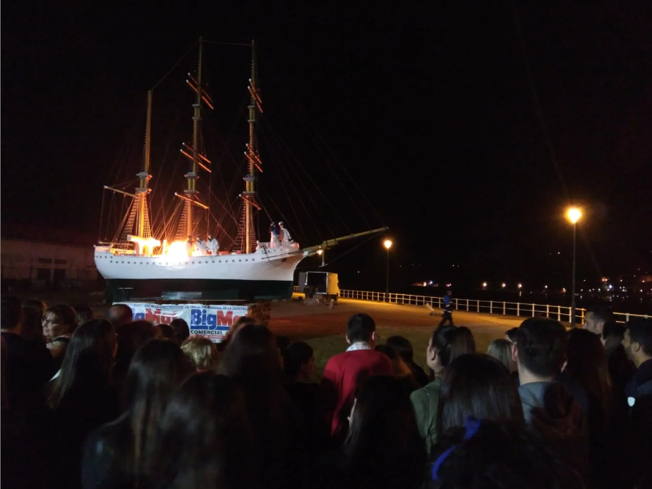
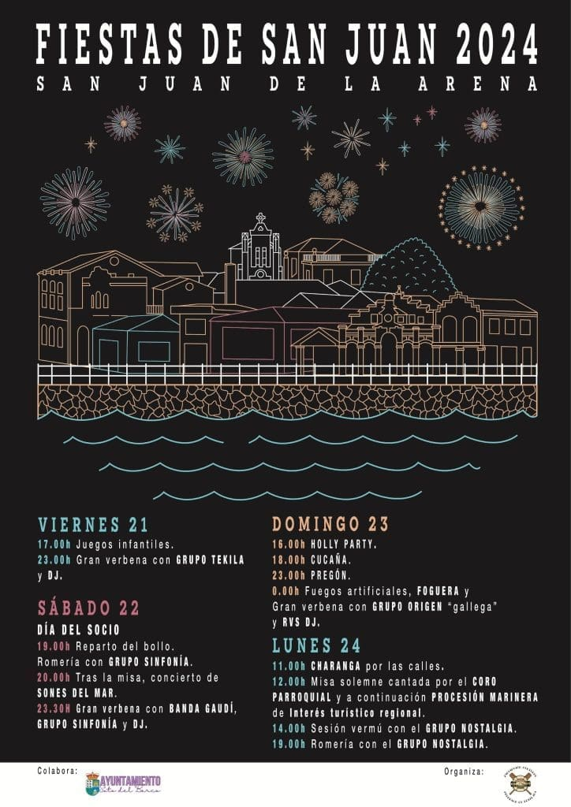
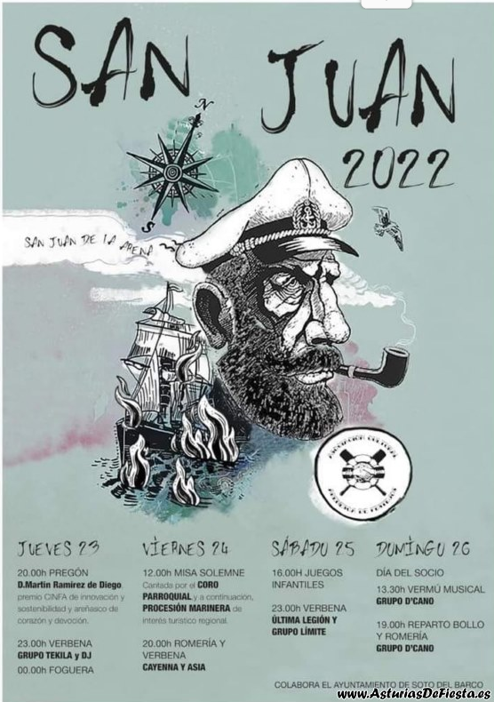

Historia y origen
Las Fiestas Patronales de San Juan de la Arena se celebran cada 24 de junio en honor a
San Juan Bautista, patrón del pueblo. La tradición une la devoción religiosa con los
antiguos rituales del solsticio de verano, donde el fuego y el agua simbolizan purificación y renovación.

Barco quemando siguiendo la tradición marinera
El acto más emblemático es la procesión marinera, declarada Fiesta de Interés Turístico
Regional, en la que la imagen del santo recorre las calles del pueblo hasta llegar al puerto. Allí, es embarcada
en una lancha engalanada que navega por la ría del Nalón, escoltada por otras embarcaciones.

Procesión marinera por las calles del pueblo
Con el tiempo se añadieron elementos populares como las verbenas nocturnas, los
fuegos artificiales y la tradicional cucaña, junto a la gastronomía típica
de sardinas a la brasa, sidra y bollos preñaos. Hoy la fiesta es un punto de encuentro que combina
tradición religiosa, cultura marinera y diversión popular.

Orquesta en el prao de la fiesta
Vivir la experiencia
Las Fiestas Patronales de San Juan de la Arena se viven con intensidad año tras año.
Cada edición reúne tradición marinera, devoción religiosa y diversión popular,
convirtiendo la villa en un gran escenario festivo.
Los carteles oficiales de cada año son el reflejo de esta identidad:
muestran la procesión marinera, la hoguera de San Juan, la cucaña o las verbenas,
y se han convertido en auténticos símbolos culturales que anuncian la llegada de la fiesta.
A continuación se presentan algunos carteles de ediciones anteriores,
que ilustran cómo la fiesta ha evolucionado sin perder su esencia marinera.



